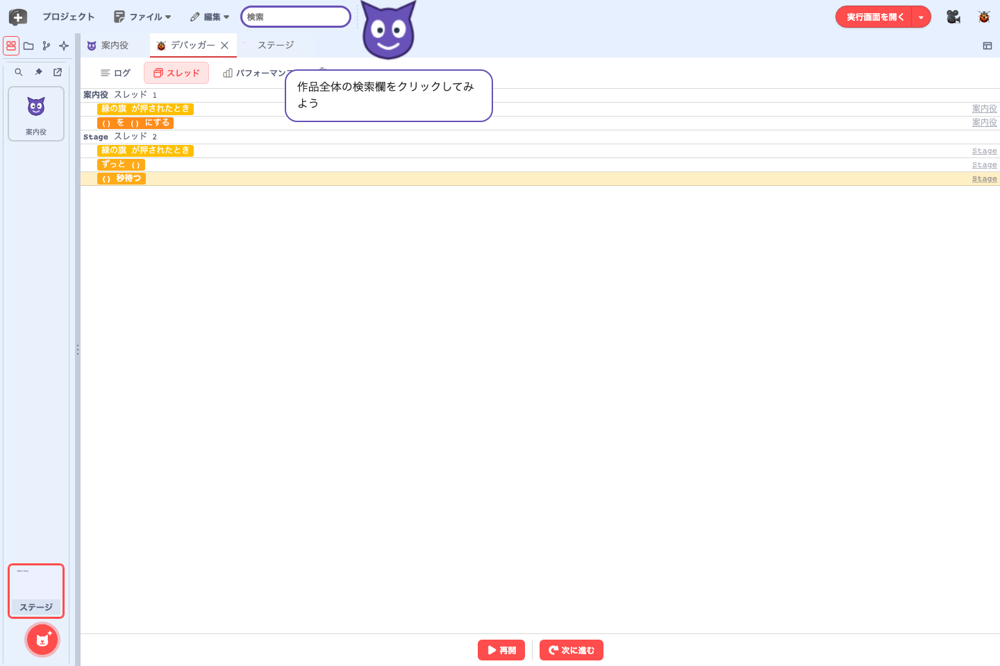

機能ガイド 2/14 · 2026年11月27日更新
画面の構成とメニュー
最上段のメニューバーでは、作品の操作を「ファイル」「編集」メニューに、実行画面・Git・録画・デバッグと拡張の操作を右側にまとめています。
2.1 最上段のメニューバー
画面最上段には、左から次の要素が並びます。
| 位置 | 要素 | できること |
|---|---|---|
| 左端 | TurboWarp Plusのロゴ | TurboWarp Plusメニューを開く |
| 左 | 作品タイトルの入力欄（初期表示は「プロジェクト」） | 作品の名前を変える |
| 左 | 「ファイル ▾」「編集 ▾」 | 作品の操作と編集の操作 |
| 中央 | 検索欄「検索」 | 作品全体を検索・置換する |
| 右 | 「Git ▾」（リポジトリのあるフォルダを開くと表示され、現在のブランチ名、例：「main ▾」になる） | 「ローカル Git を開く」、ブランチの切り替え |
| 右 | 「実行画面を開く」と「▾」 | 実行画面を開く・開き方を選ぶ |
| 右 | 🎥（録画） | 実行画面を録画する。録画中はカウントダウンや「録画を停止」などの状態が横に出る |
| 右 | テントウムシのアイコン（デバッグ） | デバッガーを開く |
| 右端 | 拡張のボタン領域 | 拡張の設定や操作 |
メニューバーの下、画面の左端には、縦に並ぶ4つの切り替え（アクティビティバー）があります。左ドロワーに出す内容を「スプライト一覧」「プロジェクトフォルダ」「Git 履歴」「AI エージェント」から選びます。スプライト一覧の上には「スプライトを検索」「スプライト一覧を固定表示」「アンドック」のボタンが、下には「ステージ」とスプライトを追加するボタンが並びます（スプライトとステージを編集する、作品フォルダとGitで管理する）。

時間のかかる操作の間は、マウスポインターが待機中の表示に変わります。
2.5 右上の拡張ボタンとデバッガー
カメラの権限やTeachable Machineのモデルの設定など、拡張が用意する操作ボタンは、メニューバー右端の角丸の枠（拡張のボタン領域）にまとめて表示されます。ボタンは拡張が必要とするときだけ現れ、作品を読み込み直すと消えます。押すと、その拡張の設定画面や操作が開きます。
- メニューバーのボタンはアイコンだけを表示します。ボタンの名前は、ポインターを置いたときのツールチップで確かめます。
- TurboWarpのデバッガーを有効にしていると、🎥（録画）と拡張のボタン領域の間にテントウムシのアイコンの「デバッグ」ボタンが表示されます。デバッガーと録画のボタンは、拡張のボタン領域には入りません。
例：紙芝居拡張（拡張のデータと文書を編集する）は、YAMLで書いた台本を実行している間だけ、制作用の再読み込みのボタンを表示します。
拡張の作者は、サンドボックスなしの拡張から Scratch.gui.stageControls.addButton でボタンを登録できます。
処理を一時停止して、止まった場所を調べる
- 「TurboWarp Plus」→「アドオン」で「デバッガー」を探して有効にします。すでに開いている編集タブにテントウムシのアイコンが出ない場合は、作品を保存してから開き直します。
- 実行したいコマンドブロックを右クリックし、「ブレークポイントを設定」を選びます。いつもどおりスクリプトを実行すると、そのブロックの直前で一時停止し、デバッガーのタブが前面に出ます。
- 「スレッド」で、どのスプライトやクローンがどこで止まったかを調べます。スレッドに並ぶブロックから元のコードへ移動できます。インタープリターで実行している場合は「次に進む」でブロックを一つずつ実行し、確認が終わったら「再開」を押します。

コンパイル実行でもブレークポイントで止められますが、コンパイルされたスレッドのステップ実行やスタック表示はできません。ブロックを一つずつ調べるには、デバッガーのコンパイラーに関する案内から設定を開き、コンパイラーを切って作品を再実行します。コンパイル実行中に追加したブレークポイントは、次の実行開始から有効です。解除するときは同じブロックの右クリックから「ブレークポイントを外す」を選びます。
「ログ」には、デバッガーのログ・警告・エラーのブロックから書き出した内容が表示されます。「パフォーマンス」ではフレームレートやクローン数を確認できます。作品の値はスプライトやステージの変数パネルで調べます。一時停止は作品の実行全体に及び、Guide付き教材を実行していれば、その進行も止まります。
いま動いている処理を追うにはデバッガーを使います。毎回同じ期待値が得られるか確認するときは、作品のテストを使います。
2.6 Plus標準配置とScratch配置を使い分ける
Plus標準配置では、左端のアクティビティバーとスプライト一覧を固定表示した状態で開きます。中央のタブでコードや素材を編集し、実行画面（ステージ）はメニューバーの「実行画面を開く」から別ウィンドウ・タブ・引出しに開きます（実行画面を開いて作品を動かす）。
従来のScratch配置で作業するには、エディターのURLに twPlusStandardLayout=0 を付けて開き直します。コード領域の右に実行画面とスプライト一覧が並び、左下に拡張を追加するボタンが表示されます。